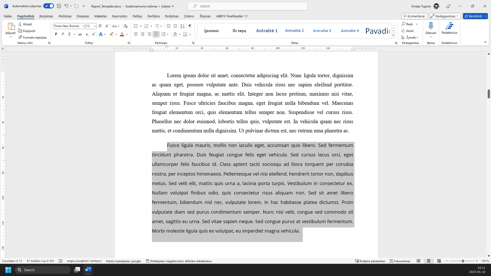
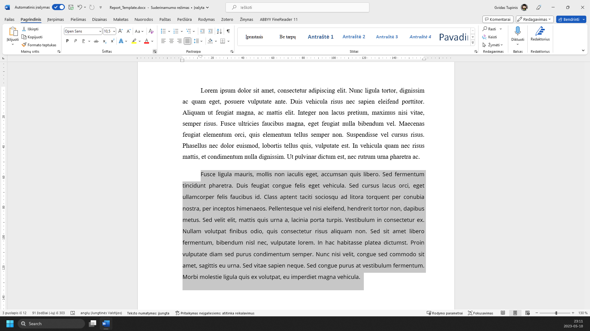
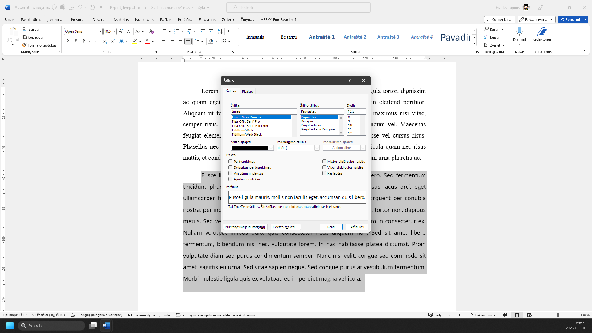
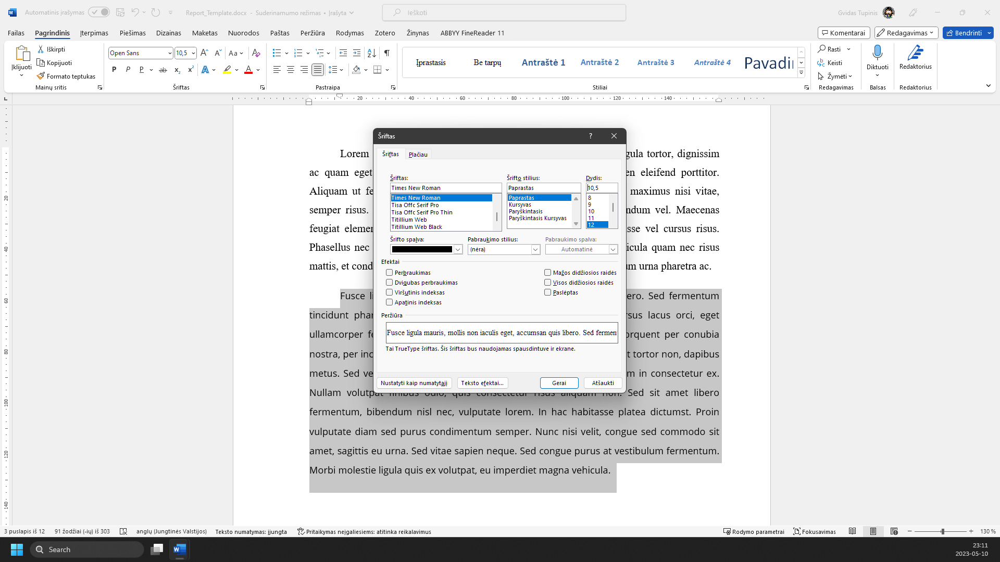
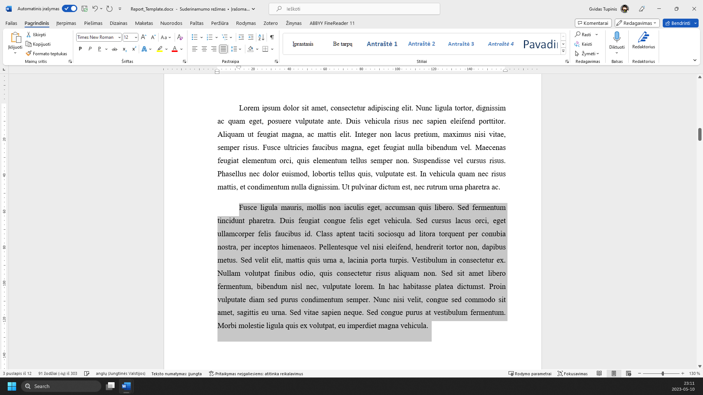

RAŠTO DARBO RENGIMAS
Šrifto parametrai
1 žingsnis iš 6
1.
Pasirenkate tekstą, kurio šriftą norite readguoti arba tuščią dokumento erdvę, kurioje rašysite tekstą

2.
Pagrindiniame meniu paspaudžiate mygtuką ‘Šriftas...’

3.
Surandate ir pasirenkate šriftą ‘Times New Roman’

4.
Nustatote šrifto dydį į ‘12’

5.
Spaudžiate mygtuką ‘Gerai’
6.
Šriftas nustatytas pagal reikalavimus

Žaliai apibrėžta vieta rodo, kur paspausti. Vaizdą gali padidinti naršyklės mastelio valdikliu. Žingsnius taip pat keičia klaviatūros rodyklės.